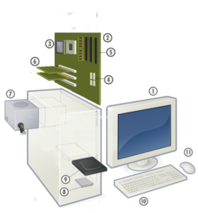
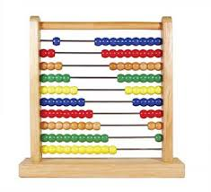
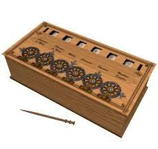
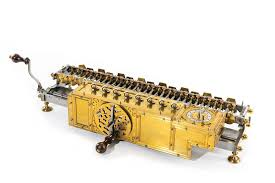

Computadora, es una máquina electrónica digital programable que ejecuta una serie de comandos para procesar los datos de entrada, obteniendo convenientemente información que posteriormente se envía a las unidades de salida
Una computadora está compuesta por numerosos y diversos circuitos integrados y varios elementos de apoyo, extensión y accesorios, que en conjunto pueden ejecutar tareas diversas con suma rapidez y bajo el control de un programa (software).
La constituyen dos partes esenciales, el hardware, que es su estructura física (circuitos electrónicos, cables, gabinete, teclado, ratón, etc.), y el software, que es su parte intangible (programas, datos, información, documentación, etc).
|
A Través del tiempo |
Eventos mas trascendentales |
|---|---|
| Abaco (5.000 años atras)  |
Primera Generacion (1945-1956)
|
|
Calculadora de Pascal(1642)  |
Segunda Generación (1956-1963)
|
|
Máquina de multiplicar de Leibniz (1694)  |
Tercera Generación (1964-1971)
|
| Clases y Categorías de Computadoras | |
|---|---|
| Clases |
Análoga Digital De uso general De uso especial |
| Categorías |
Supercomputadora Mainframe Minicomputadoras Servidor Microcomputadoras |